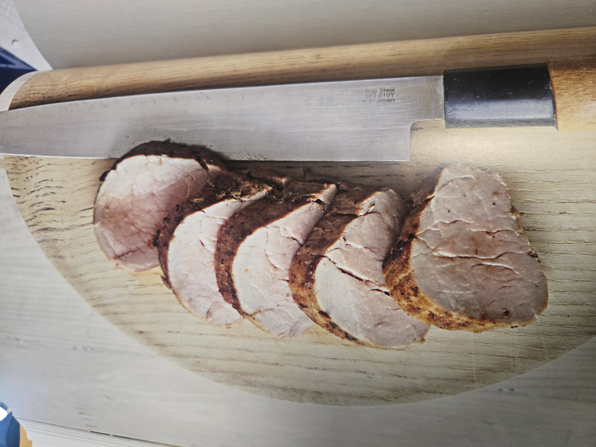

Mageres Schweinefleisch wird besonders köstlich durch eine natürlich süsse Marinade, die das Fleisch zusätzlich zart macht. Fenchelsamen steuern neben ihrem typischen Aroma auch Phytosterole und Antioxidantien bei. Das Fleisch kann warm oder kalt gegessen werden, mit einem blanchierten Gemüsesalat ist es ein sättigendes Essen, das sich auch gut zum Mitnehmen ins Büro eignet.
Das Schweinefilet gilt zu Recht als die edelste Zuschnitt vom Schwein – zart, fein in der Faser und mit einem dezenten, angenehm milden Eigengeschmack. Gerade diese Zartheit macht das Filet zu einem besonders dankbaren, aber auch anspruchsvollen Stück Fleisch: Es verzeiht keine Fehler bei der Garzeit und belohnt Sorgfalt mit einem Bissergebnis, das förmlich auf der Zunge zergeht.
Entscheidend für ein gelungenes Filet ist das kurze, scharfe Anbraten bei hoher Hitze. So entsteht eine schöne, aromatische Kruste, die den natürlichen Fleischsaft im Inneren einschliesst. Anschliessend darf das Filet bei sanfter Hitze im Ofen langsam fertig garen – nur so bleibt es innen rosig und saftig, statt trocken und faserig zu werden.
Seine dezente Aromatik macht das Schweinefilet zudem zu einem wunderbar wandelbaren Partner in der Küche. Ob mit einer cremigen Senfsauce, einer fruchtigen Note aus Apfel und Calvados oder mediterranen Kräutern wie Rosmarin und Thymian veredelt – das Filet nimmt Geschmacksrichtungen bereitwillig auf, ohne sie zu übertönen, und lässt so viel Raum für kreative Kombinationen.
Am Ende ist es genau diese Kombination aus Zartheit, Vielseitigkeit und feiner Eigenart, die das Schweinefilet zu etwas Besonderem macht. Richtig zubereitet, verwandelt es sich von einem unscheinbaren Stück Fleisch in den unbestrittenen Höhepunkt jedes Tellers – ein kleines Fest der Raffinesse für einen unkomplizierten Alltag.